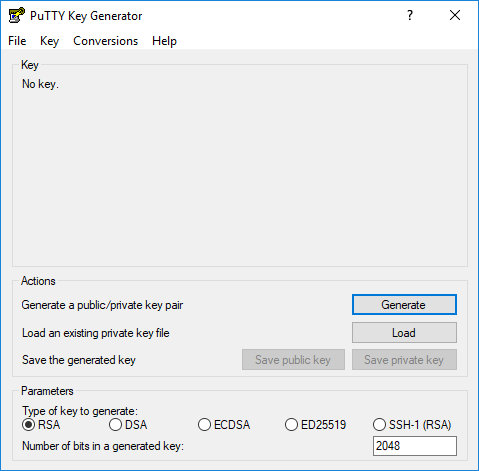
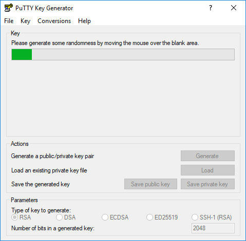
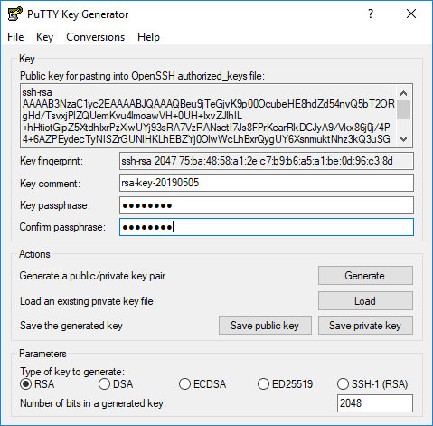
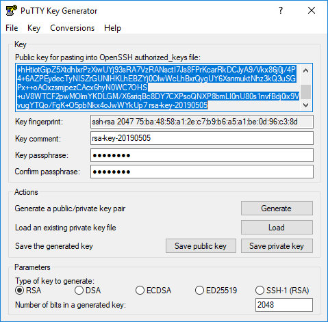
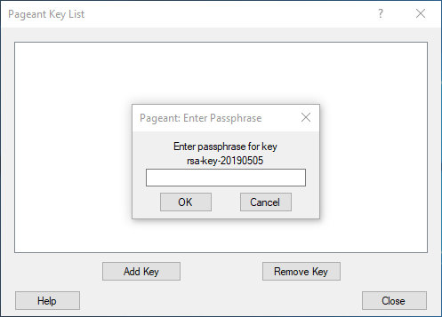

在 Windows 使用 PuTTYgen 上生成 SSH 密钥
Secure Shell(SSH) 是一种加密网络协议，用于客户端和服务器之间的安全连接，并支持各种身份验证机制。
两种最流行的机制是基于密码的身份验证和基于公钥的身份验证。使用 SSH 密钥比传统的密码验证更安全，更方便。
本教程介绍如何使用 PuTTYgen 在 Windows 上生成 SSH 密钥。我们还将向您展示如何设置基于 SSH 密钥的身份验证，并在不输入密码的情况下连接到远程 Linux 服务器。
下载 PuTTYgen
PuTTYgen 是一个开源实用程序，允许您为最流行的 Windows SSH 客户端 PuTTY 生成 SSH 密钥。
PuTTYgen 作为独立的可执行文件提供，它也是 PuTTY.msi 安装包的一部分。如果您没有安装 PuTTYgen ，请转到 PuTTY 下载页面并下载 PuTTY 安装包。安装很简单，双击安装包并按照说明操作。
使用 PuTTYgen 创建 SSH 密钥
要使用 PuTTYgen 在 Windows 上生成 SSH 密钥对，请执行以下步骤：
-
启动 PuTTYgen 工具，双击其 .exe 文件或转到 Windows 开始菜单→ PuTTY （64位）→ PuTTYgen 。

对于
Type of key to generate，保留默认 RSA 。对于大多数人来说，Number of bits in a generated key2048 就足够了。或者，您可以将其更改为 4096 。 -
单击
Generate按钮开始生成新密钥对的过程。
系统会要求您将鼠标移到 Key 部分的空白区域以生成一些随机性。移动指针时，绿色进度条将前进。这个过程应该需要几秒钟。
-
生成过程完成后，公钥将显示在窗口中。

（可选）如果要使用密码，请在“Key passphrase”字段中键入密码，并在“Confirm passphrase”字段中确认相同的密码。如果您选择使用密码短语，则可以通过保护私钥免遭未经授权的使用来获得额外的安全保护。
如果设置密码，则每次使用私钥时都需要输入密码。
-
单击“保存私钥”按钮保存私钥。您可以使用 .ppk 扩展名（ PuTTY 私钥）将文件保存在任何目录中，但建议您将其保存在可以轻松找到它的位置。为私钥文件使用描述性名称是很常见的。
或者，您也可以保存公钥，但稍后可以通过加载私钥重新生成公钥。
-
右键单击标记为“Public key for pasting into OpenSSH authorized_keys file”的文本字段，然后单击“全选”选择所有字符。打开文本编辑器，粘贴字符并保存。确保你粘贴整个密钥。建议将文件保存在保存私钥的同一目录中，使用相同名称的私钥和 .txt 或 .pub 作为文件扩展名。

这是您将其添加到 Linux 服务器的关键。
将公钥复制到 Linux 服务器
现在您已生成 SSH 密钥对，下一步是将公钥复制到要管理的服务器。
启动 PuTTY 程序并登录到远程 Linux 服务器。
如果您的用户 SSH 目录不存在，请使用 mkdir 命令创建它并设置正确的权限：
mkdir -p ~/.ssh
chmod 0700 ~/.ssh
用文本编辑器打开 ~/.ssh/authorized_keys 文件， 并粘贴在步骤 4 中复制的公钥到 ~/.ssh/authorized_keys 中：
nano ~/.ssh/authorized_keys
整个公钥文本应该在一行上。
运行以下 chown 命令以确保只有您的用户可以读写该 ~/.ssh/authorized_keys 文件：
chmod 0600 ~/.ssh/authorized_keys
使用 SSH 密钥登录服务器
Pageant 是一种 PuTTY SSH 身份验证代理，它将私钥保存在内存中。 Pageant 二进制文件是 PuTTY.msi 安装包的一部分，可以通过转到 Windows 开始菜单→ PuTTY（64位） → Pageant 来启动。
当您启动 Pageant 时，它会在系统托盘中放置一个图标。双击图标，将打开 Pageant 窗口。
要加载密钥，请按“Add key”按钮，这将打开一个新文件对话框。找到私钥文件，然后按“打开”。如果您尚未设置密码，则会立即加载密钥。否则，系统将提示您输入密码。

输入密码， Pageant 将加载私钥。
完成上述步骤后，您应该能够登录到远程服务器而不会被提示输入密码。
要测试它，请打开一个新的 PuTTY SSH 会话并尝试登录到您的服务器。 PuTTY 将使用加载的密钥，您将在不输入密码的情况下登录 Linux 服务器。
禁用 SSH 密码验证
要为服务器添加额外的安全层，可以禁用 SSH 的密码身份验证。
在禁用 SSH 密码身份验证之前，请确保无需密码即可登录服务器，并且您登录的用户具有 sudo 权限。
登录到远程服务器并使用文本编辑器打开 SSH 配置文件 /etc/ssh/sshd_config ：
sudo nano /etc/ssh/sshd_config
搜索以下指令并按如下方式进行修改：
PasswordAuthentication no
ChallengeResponseAuthentication no
UsePAM no
完成后，键入以下命令保存文件并重新启动 SSH 服务：
sudo systemctl restart ssh
此时，禁用基于密码的身份验证。
结论
在本教程中，您学习了如何生成新的 SSH 密钥对并设置基于 SSH 密钥的身份验证。您可以将相同的密钥添加到多个远程服务器。我们还向您展示了如何禁用 SSH 密码身份验证并为您的服务器添加额外的安全层。
默认情况下， SSH 侦听端口 22。 更改默认 SSH 端口将降低自动攻击的风险。